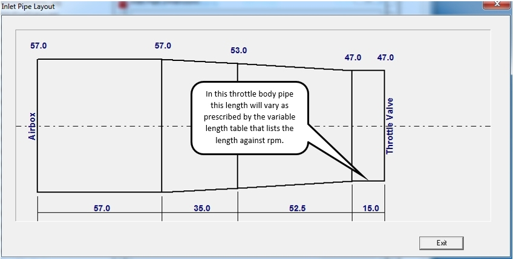

Variable Inlet Length
The inlet length can be modeled as varying in length with RPM. This can be defined on the inlet creation
dialog box:

It can also later be defined on the inlet edit dialog box:

The variable length is subject to the following:
- Only cylinder pipes (pipes directly connected to the cylinder head) or throttle body pipes (connected to cylinder pipes) can vary in length.
- If there are throttle body pipes, these pipes will vary while if there are no throttle bodies the cylinder pipes will vary.
- The last segment of the pipe (the one against the head for cylinder pipes or the one against the throttle for throttle body pipes) will vary in length.
The next figure shows an example of where the length in a throttle body will be varied:

The length will be varied as follows:
- At rpm values below the minimum rpm value the length will be fixed at the lowest rpm length value.
- At rpm values above the maximum rpm value the length will be fixed at the highest rpm length value.
- For rpm values between prescribed rpm length values the length will be determined by linear interpolation.
- The specified length for the last segment will not be used but be replaced with the interpolated length.